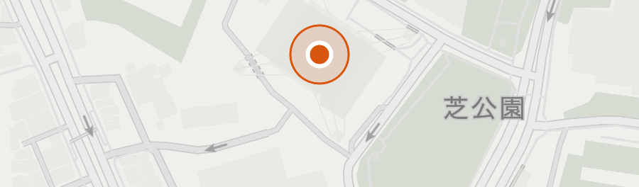
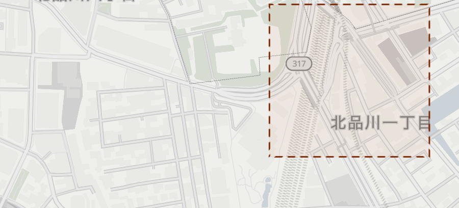
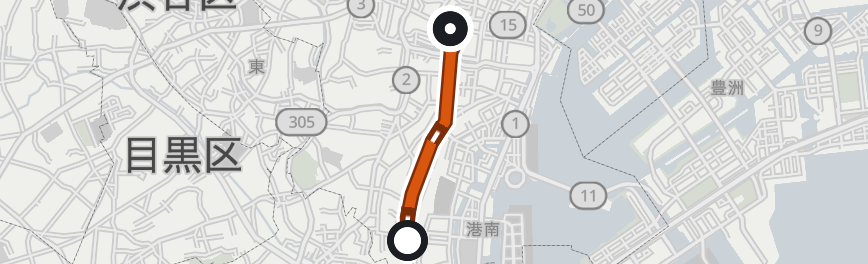
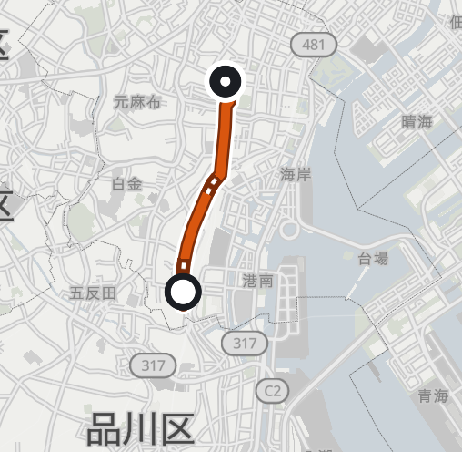

頼みごとは、日本語の1文で。
返事には毎回、解釈・実行した操作・結果が順に出ます。
例
返事の形

東京都港区芝公園四丁目2番8号
名前で探したとき（聞き返し）
どれですか？（候補はOSMが返したものだけ）

この範囲 踏 踏 踏2解釈：踏切＝railway=level_crossing（歩行者専用の踏切は含まない） 歩行者専用の踏切も含めるオフ
トンネル＝道路の tunnel=yes（建物の通り抜けは除く）

© OpenStreetMap contributors
（openstreetmap.org/copyright）／ Protomaps ／ 経路：Valhalla ／
データ時点：OSM 2026-11-03／地図 2026-11-04

同じ表示範囲・コース・ピンアプリのサーバが外へ出した通信を、通信先ごとに数える。